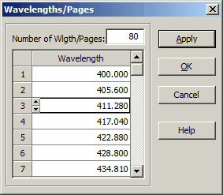

Measurement Wavelengths
This dialog can be initiated from the Measurement Editor in Angular mode when you want to add or exclude wavelengths at which targets are specified.

- Set your desired number of wavelengths in the Number of
Wavelengths/Pages field. This will automatically add or remove the necessary number of rows in the list box. After editing the wavelength values, press Apply to save the changes for the currently edited target. The OK button also applies the changes while closing the Wavelengths/Pages dialog. To discard any changes, press Cancel.
- For more convenient editing, you can also utilize the
Spreadsheet Editing Toolsfrom the main toolbox.